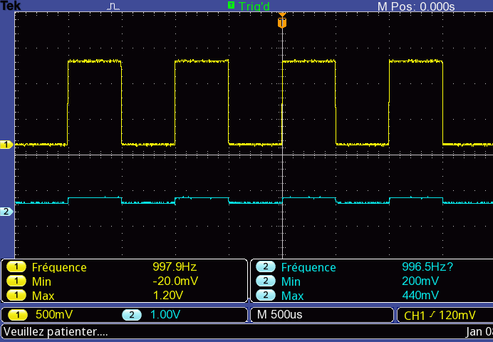
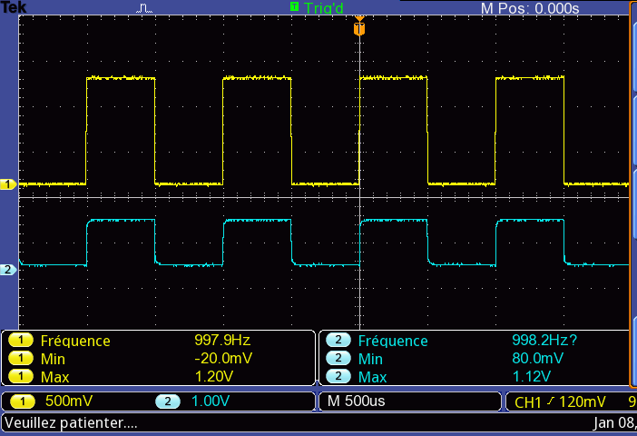
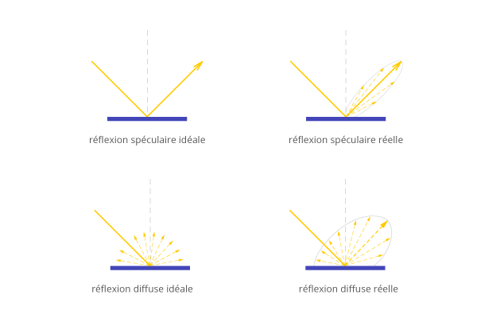
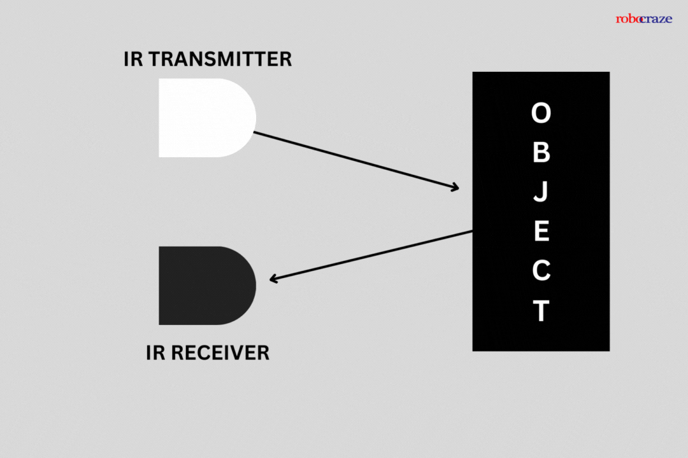
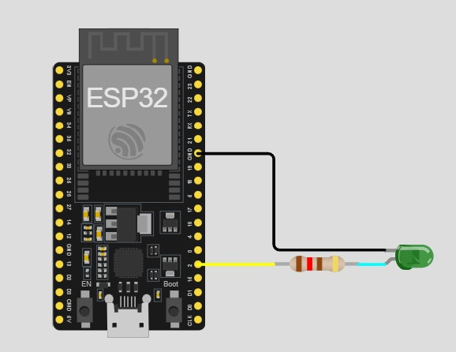
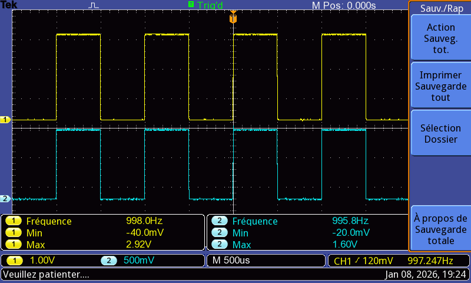
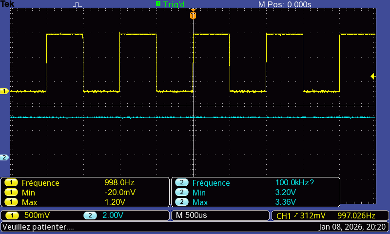
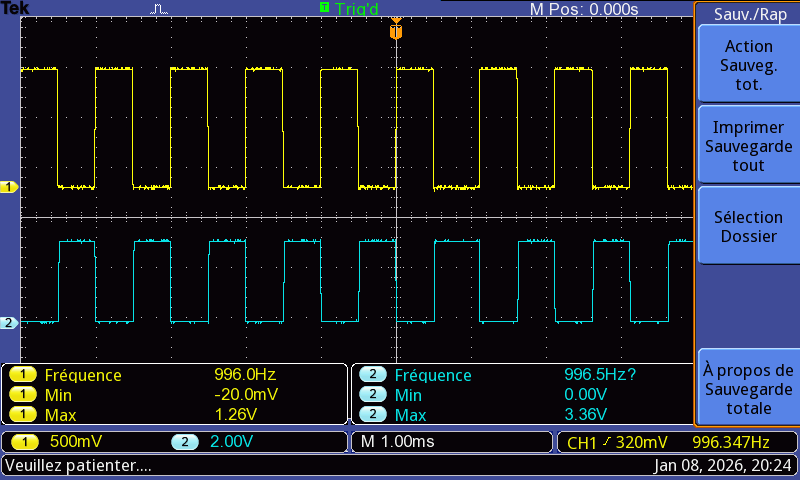

Dans cette partie du projet, je présente la conception d’un système de détection basé sur l’infrarouge. Le principe repose sur l’émission d’un signal infrarouge modulé puis sur l’analyse du signal réfléchi par le robot afin de déterminer sa présence. Ce système s’appuie sur une LED infrarouge pilotée par l’ESP32 pour l’émission, ainsi qu’une photodiode associée à une chaîne d’amplification et de mise en forme pour la réception du signal.
Donc je commencerai par expliquer les principes physiques utilisés, notamment la réflexion de la lumière et le fonctionnement de l’infrarouge. Jeprésenterai ensuite en détail la partie émission, avec la génération du signal et le pilotage de la LED infrarouge par l’ESP32. Enfin, j’aborderai la partie réception, qui comprend la détection du signal réfléchi, son amplification, sa mise en forme ainsi que son traitement par l’ESP32.
La réflexion se définit comme un changement de direction du rayonnement électromagnétique quand celui-ci atteint une surface. En télédétection, le phénomène de réflexion est primordial, car l’identification de la nature des objets par les capteurs satellitaires repose en grande partie sur la manière dont ils renvoient le rayonnement. La direction du rayonnement réfléchi peut varier, elle dépend de la rugosité des surfaces naturelles. On distingue ainsi trois types de réflexion : réflexion spéculaire, réflexion diffuse et réflexion de volume.


Ceci est une description très proche de ce qu'on veut faire
Compte rendu du TP réaliser par || Cheikh Tidiane LO
Une fois que nous avons acquis les bases sur le phénomène de réflexion et travaillé dessus à travers un TP, nous disposons alors de toutes les compétences nécessaires pour aborder la suite du projet. De ce fait, nous pouvons désormais attaquer la partie émission.
Pour générer le signal infrarouge, j’ai programmé l’ESP32 afin de produire un signal carré d’environ 1 kHz sur la broche GPIO2. Cette modulation est essentielle car elle permet de différencier le rayonnement émis par la LED infrarouge des sources infrarouges ambiantes (comme le soleil ou l’éclairage artificiel), qui, elles, produisent généralement un signal continu ou lentement variable. Ici, le système recherche spécifiquement une composante modulée à 1 kHz, ce qui rend la détection plus fiable. Le signal généré par l’ESP32 est appliqué à une LED infrarouge LD271. Afin de la protéger et de limiter le courant, une résistance série est nécessaire. D’après la datasheet, la tension directe de la LED est d’environ 1,3 V. L’ESP32 fonctionnant sous 3,3 V, et sachant que son courant maximal est de 20 mA, la résistance théorique est :
$$ R = \frac{3{,}3 - 1{,}3}{20 \times 10^{-3}} \approx 100\,\Omega $$
Cette valeur permettrait d’atteindre le courant maximal délivrable par l’ESP32. Pour conserver une marge de sécurité et préserver les composants, une résistance de 120 Ω a été choisie. Le courant réel devient alors :
$$ I = \frac{3{,}3 - 1{,}3}{120} \approx 16{,}7\,\text{mA} $$
Ce courant reste largement suffisant pour assurer une émission infrarouge efficace tout en garantissant la fiabilité et la sécurité du système. La LED peut ainsi fonctionner correctement et produire le signal infrarouge modulé nécessaire à la détection du robot.
Afin de vérifier le bon fonctionnement du montage, des mesures ont été réalisées à l’oscilloscope. En observant le signal en amont de la résistance (tracé en jaune), on obtient une tension proche de 3 V, correspondant à la tension fournie par l’ESP32. Après la résistance, aux bornes de la LED (tracé en bleu clair), la tension mesurée est d’environ 1,6 V, avec une tolérance d’environ ±10 à 20 %, ce qui reste cohérent avec la tension directe annoncée dans la datasheet de la LD271. Dans les deux cas, le signal observé est bien un signal carré dont la fréquence mesurée est d’environ 998 Hz, ce qui confirme le bon fonctionnement de la modulation prévue à 1 kHz.
#include <Arduino.h>
#define signal_sortie 2
void setup() {
// ----- Génération signal -----
pinMode(signal_sortie, OUTPUT);
}
void loop() {
// ----- Génération signal carré ~1 kHz -----
digitalWrite(signal_sortie, HIGH);
delayMicroseconds(500);
digitalWrite(signal_sortie, LOW);
delayMicroseconds(500);
}


Dans cette partie, c’est la broche GPIO13 de l’ESP32 qui émet le signal modulé. Pour capter la lumière infrarouge réfléchie par le robot, j’ai utilisé une photodiode associée à un amplificateur opérationnel LT082, réalisé sous la forme d’un montage transimpédance. Le rôle de ce montage est de convertir le courant généré par la photodiode en une tension exploitable par la suite du système. Lorsque le rayonnement infrarouge réfléchi arrive sur la photodiode, celle-ci produit un courant photo-généré noté $I_{ph}$, proportionnel à l’intensité lumineuse reçue. Ce courant est traité par l’amplificateur opérationnel qui, grâce à une résistance de contre-réaction de 230 kΩ, réalise une conversion courant–tension. La relation obtenue est :
$$ V_s = R \times I_{ph} $$
Ainsi, plus la lumière infrarouge réfléchie est importante, plus le courant $I_{ph}$ augmente et plus la tension de sortie $V_s$ grandit. On obtient donc un signal électrique directement représentatif de la quantité d’infrarouge renvoyée par le robot, ce qui permet d’indiquer sa présence. Ce montage permet donc d’obtenir un signal amplifié, propre et proportionnel au flux infrarouge réfléchi, prêt à être mis en forme puis traité par la suite du système. En l’absence de surface réfléchissante devant le capteur (par exemple sans robot ou sans support renvoyant la lumière), le courant généré par la photodiode reste très faible et la tension de sortie est quasi nulle, ce qui correspond à une absence de détection.


Sur les deux images, on observe que, avant la réflexion de la lumière sur un objet (ici un papier utilisé pour l’illustration), la tension de sortie Vs se situe autour de 440 mV. Cette tension résulte uniquement de la lumière ambiante (lumière du jour). Après réflexion de la lumière sur l’objet, le signal augmente et passe d’environ 440 mV à 1,12 V, voire davantage selon la distance entre le capteur et l’objet.
Cependant, cette variation n’est pas suffisante pour être interprétée correctement par l’ESP32 comme un niveau
logique haut ou bas.
Une première idée serait d’augmenter la résistance afin d’élever la valeur de Vs, mais cela pourrait conduire à
des
tensions trop élevées
(jusqu’à 12 V), ce qui est incompatible et dangereux pour l’ESP32. Pour résoudre ce problème, j’utilise donc un
amplificateur à transistor
en montage émetteur commun, afin d’obtenir un signal logique propre, soit 0 V, soit 3,3 V, tout en conservant la
fréquence du signal d’origine.
Le signal Vs, compris entre environ 40 mV et 1,5 V, est appliqué sur la base d’un transistor 2N2222 monté en
émetteur commun. Une résistance de
10 kΩ est placée entre le Vcc = 3,3 V de l’ESP32 et le collecteur du transistor. Ce dimensionnement permet
d’établir
une polarisation correcte du
transistor afin qu’il fonctionne dans sa zone active, c’est-à-dire sans être ni bloqué ni saturé. Le transistor
peut
alors jouer pleinement
son rôle d’amplificateur : les variations de la tension Vs se traduisent par des variations proportionnelles du
courant collecteur, ce qui permet
d’obtenir un signal amplifié et exploitable tout en conservant l’information liée à la présence du rayonnement
infrarouge réfléchi.
Des observations montrent que, dans certaines situations, la tension de sortie Vs peut légèrement dépasser 3,3 V,
en
raison des tolérances et
imperfections des composants. Pour protéger l’ESP32, j’ai ajouté un pont diviseur de tension afin de réduire Vs
d’environ 300 mV, ce qui
garantit que le signal reste largement en dessous de la tension maximale admissible par l’ESP32 tout en conservant
la forme et la fréquence
du signal.



Datascheet de la photodiode (bp104)
Datascheet du tansistor (2N2222)
Une fois le signal infrarouge amplifié et mis en forme par le transistor, on obtient un signal logique compatible 3,3 V, exploitable directement par l’ESP32. Ce signal est un signal périodique dont la fréquence correspond à celle de la modulation infrarouge. La présence ou non du robot se traduit alors par une variation de l’amplitude du signal reçu, mais surtout par la présence ou l’absence de cette fréquence caractéristique.
Pour mesurer cette fréquence de manière fiable, j’utilise le Pulse Counter (PCNT) intégré à l’ESP32. Le PCNT est un périphérique matériel de l’ESP32 conçu pour compter des impulsions électriques sur une broche GPIO sans solliciter le processeur. Contrairement à une mesure réalisée par interruptions ou par lecture logicielle, le PCNT fonctionne de manière autonome, ce qui garantit une mesure précise même à des fréquences élevées. Concrètement, le PCNT incrémente ou décrémente un compteur interne à chaque front du signal (montant ou descendant) détecté sur la broche configurée. Il est possible de choisir le type de front à compter (montant, descendant ou les deux), les limites du compteur, et d’associer un filtre anti-rebond matériel pour éliminer les parasites. Dans mon application, la sortie du montage à transistor est reliée à une entrée GPIO configurée en entrée PCNT. À chaque front du signal reçu, le compteur est incrémenté. En mesurant le nombre d’impulsions pendant une durée connue (par exemple 100 ms ou 1 s), l’ESP32 peut calculer la fréquence du signal :
\( f = \frac{N}{T} \)
où :
\(N\) est le nombre d’impulsions comptées et
\(T\) est la durée de la fenêtre de mesure.
Lorsque le robot est présent, la photodiode reçoit le rayonnement infrarouge réfléchi, ce qui génère un signal périodique stable, et le PCNT détecte un grand nombre d’impulsions. En revanche, en absence de robot, le signal devient très faible ou inexistant, et le nombre d’impulsions chute fortement. Le Pulse Counter permet ainsi de transformer un phénomène optique (la réflexion infrarouge) en une information numérique robuste, exploitable directement par le programme de l’ESP32 pour décider de la présence ou non du robot.